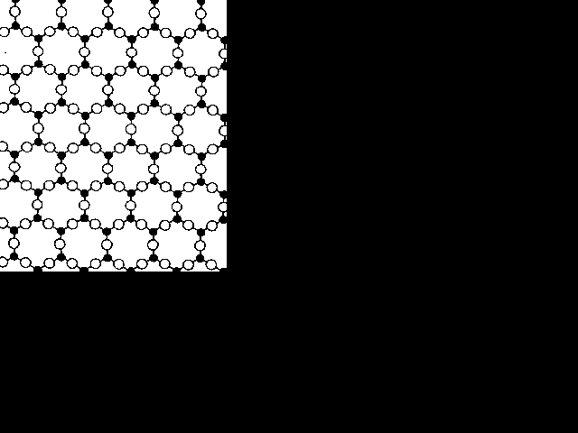
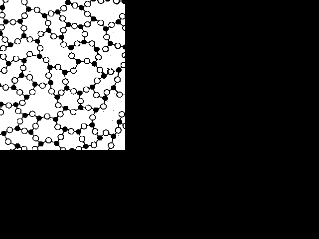
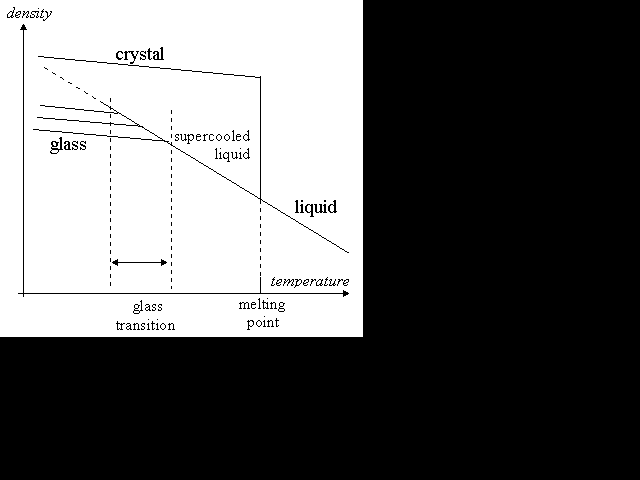

Updated by Dan Watts, 2021.
Original by Philip Gibbs, 1996
Thanks to the many who contributed their knowledge and references.
It's sometimes said that glass in very old churches is thicker at the bottom than at the top because glass is a liquid, and so over several centuries it has flowed towards the bottom. This is not true. In mediaeval times, panes of glass were often made by the "Crown glass" process. A lump of molten glass was rolled, blown, expanded, flattened and finally spun into a disc before being cut into panes. The sheets were thicker towards the edge of the disc and were usually installed with the heavier side at the bottom. Other techniques of forming glass panes have been used, but it is only the relatively recent float glass processes that have produced good-quality flat sheets of glass.
To answer the question "Is glass liquid or solid?", we have to understand glass's thermodynamic and material properties.
Although much is still not well understood about the molecular physics and thermodynamics of glass, we can give a general account of what is thought to be the correct physics.
Many solids have a crystalline structure on microscopic scales, with their molecules arranged in a regular lattice. When the solid is heated, its molecules vibrate about their position in the lattice until, at the melting point, the crystal breaks down and the molecules start to flow. A sharp distinction exists between the solid and the liquid states, that is separated by a first-order phase transition: a discontinuous change in the properties of the material, such as density. Freezing is marked by a release of heat known as the heat of fusion.

A liquid has viscosity: a resistance to flow. The viscosity of water at room temperature is about 0.001 pascal seconds. (A pascal second, or "Pa s", is the relevant SI unit. A pascal is a newton per square metre.) A thick oil typically has a viscosity of about 0.1 Pa s. As a liquid is cooled, its viscosity normally increases; but increasing viscosity has a tendency to prevent crystallisation. Usually when a liquid is cooled to below its freezing point, crystals form and it solidifies; but sometimes it can become supercooled, remaining liquid below its melting point because no nucleation sites exist that can initiate the crystallisation. If the viscosity rises enough as it is cooled further, it might never crystallise. The viscosity rises rapidly and continuously, forming a thick syrup and eventually an amorphous solid. The molecules then have a disordered arrangement, but sufficient cohesion to maintain some rigidity. In this state, the material is often called an amorphous solid or glass.

Some people claim that glass is actually a supercooled liquid because as it cools, no first-order phase transition occurred. In fact, a second-order transition occurs between the supercooled liquid state and the glass state, and so a distinction between a "glass" and a "supercooled liquid" must still be drawn. The transition is not as dramatic as the phase change that takes a liquid to a crystalline solid. A second-order transition has no discontinuous change of density and no latent heat of fusion. Rather, this transition can be detected as a marked change in the thermal expansivity and heat capacity of the material.
The temperature at which the second-order transition from supercooled liquid to glass occurs varies according to the rate at which the material cools. If it cools slowly, it has a longer time to relax: the transition occurs at a lower temperature, and the glass formed is more dense. If the liquid cools very slowly, it will crystallise. The glass transition temperature thus has a lower limit.

A liquid-to-crystal transition is a thermodynamic one: below the freezing point, the crystal is energetically favoured over the liquid. The transition to a glass is purely kinetic: the disordered glassy state does not have enough kinetic energy to overcome the potential energy barriers required for movement of the molecules past one another, and so the molecules of the glass take on a fixed but disordered arrangement. Glasses and supercooled liquids are both metastable phases rather than true thermodynamic phases like crystalline solids. In principle, a glass could undergo a spontaneous transition to a crystalline solid at any time. Sometimes old glass devitrifies in this way if it has impurities.
The situation at the level of molecular physics can be summarised by saying that three main types of molecular arrangement exist:
(Just to illustrate that no such classification could ever be complete: some years ago, scientists created quasi-crystals that are quasi-periodic. They do not fit into the above scheme, and are sometimes described as being halfway between crystal and glass.)
It would be convenient to conclude that glassy materials changed from being a supercooled liquid to an amorphous solid at the glass transition; but this claim is very difficult to justify. Polymerised materials such as rubber show a clear glass transition at low temperatures, yet are normally considered to be solid in both the glass and rubber states.
It is sometimes said that glass is therefore neither a liquid nor a solid. It has a distinctly different structure with properties of both liquids and solids. Not everyone agrees with this language.
Usually when people describe solids and liquids, they refer to macroscopic material properties rather than the arrangement of molecules. After all, glass was known as a material long before its molecular physics began to be understood. Macroscopically, materials exhibit a very wide range of behaviours. Solids, liquids and gases are ideal behaviours characterised by properties such as compressibility, viscosity, elasticity, strength and hardness. But materials don't always behave according to such ideals. For example, it's possible to take water from being a liquid to a gas at high pressure without its passing through a phase transition; hence, at some stage, its state must be something between an ideal liquid and an ideal gas.
For crystalline substances, the distinction between the solid and liquid states is very clear; but what about glasses? Indeed, where do polymers, gels, foams, liquid crystals, powders and colloids fit into this picture? Some people draw no clear general distinction between a solid and a liquid. A solid, they claim, should just be defined as a liquid with a very high viscosity. They set an arbitrary limit of 1012 Pa s, above which they call it a solid and below which they call it a liquid.
But others say that this ignores a distinction between viscosity of liquids and plasticity of solids. An ideal newtonian liquid deforms at a rate that is proportional to stresses applied, and to its viscosity. For arbitrarily small stresses, a viscous liquid will flow. Molasses, pine pitch and Silly Putty are examples of liquids with very high viscosity that flow very slowly under only the force of their own weight. On the other hand, plastics can be very soft, but are still considered solid because they have rigidity and do not flow.
Solids are elastic when small stresses are applied to them. They deform, but resume their original shape when the stress is removed. Under higher stresses some solids break, whereas others exhibit plasticity. Plasticity means that they deform and don't return to their original shape when the stress is removed. Many substances, including metals such as copper, have plasticity. A material's resistance to flow under plastic deformation is called its viscoplasticity. This is like viscosity, except that now a minimum stress exists, below which plasticity is absent. (This stress is called the elastic limit.) Materials with plasticity do not flow; but they may creep, meaning they deform slowly but only when held under constant stress above their elastic limit.
The behaviour of solids under small stresses can be surprising. As found in the references at the end of this article, beginning in 1957, Japanese researchers have measured the bending of two granite beams, each about two metres long and around 10 centimetres square. They have found a continual bending that shows no signs of decreasing. Their conclusion is that granite exhibits viscous flow, with a viscosity of around (3 to 6) × 1019 Pa s.
So, an arbitrary measure of viscosity or viscoplasticity is not a good way to distinguish solids from liquids. Another way to define the distinction between solid and liquid is to say that if some minimum shear stress is required to produce a permanent deformation, then the material is a solid. This is just a precise way of saying it has some rigidity. A liquid can then be defined as a material that will flow. When the liquid is placed in a container, it will eventually flow to fill the lower reaches until its own surface is flat. A difficulty here is that these two definitions do not cover all cases. Some materials exist that have some limited flow known as viscoelasticity, where the material will deform elastically under stress. If the stress is applied for a long time, the deformation becomes permanent even if the stress was small. Materials with viscoelasticity might seem to flow slowly for a while but then stop. It is futile to try to make a clear distinction between liquids and solids in cases of such behaviour.
To be sure that glass in old windows has not flowed, we must recognise the different properties of different glasses. Glass can be made from pure silica, but fused silica has a high glass transition point of about 1200°C, making it difficult to mould into panes or bottles. At least 2000 years ago, mankind learnt how to lower the softening temperature by adding lime and soda before heating, to produce a glass containing sodium and calcium oxides. Soda-lime glass used for windows and bottles today contains other oxides as well. Measuring the glass transition temperature of a glass is difficult because that temperature depends on the rate at which the glass is cooled. In the case of modern soda-lime glass, a quick cooling will produce a glass transition at about 550°C. A minimum glass transition temperature of about 270°C is thought to exist; and if the material is cooled very slowly, it can still be a supercooled liquid down to just above that temperature. Glass such as Pyrex (used for test-tubes and ovenware) is usually based on boro-silicates or alumino-silicates: these withstand heating better and typically have a higher glass transition temperature. Some glasses, such as the leaded variety, have lower transition temperatures.
Sometimes people say that good evidence that glass does not flow is provided by old telescope lenses: even after 150 years, these maintain good optical qualities, as evidenced by the fact that they would be spoiled by the slightest deformation. In fact, optical glass seldom resembles the glass used in windows and bottles. Optical glass can be based on boro-silicate or soda-lime glass with other metallic oxides added to improve its thermal and optical properties. So, old telescope lenses and mirrors provide good evidence that some glasses do not flow, but little evidence to support the claim that glass in old windows has not flowed. Another example of a non-flowing glass is Stone Age arrow heads made of obsidian, a natural glass. These are found still to be razor sharp after tens of thousands of years; but again, this glass is mainly silica and alumino-silicates and is much tougher than window glass.
For definitive evidence that glass has not flowed in old windows, we must examine the oldest examples. Early glass used to make bottles and windows was usually formed by adding soda and lime to silicates. Sometimes potash was added instead. Usually present were other impurities that made it softer than modern soda-lime glass. Other compounds were often added to give colour or to improve its properties. The Romans made glass objects of this sort in the First Century AD, and despite being very delicate, some examples remain, including the elaborately decorated Portland Vase in the British Museum. Roman glassware provides some of the best available evidence that types of soda-lime glass are not fluid, even after nearly 2000 years. The oldest remaining examples of stained glass windows that remain in place date from the 12th century. The oldest of all are the five figures in the clerestory of Augsburg Cathedral in Germany, which are dated to between 1050 to 1150. Many other early examples are found in France and England, including the magnificent North Rose window of Notre Dame in Paris, which dates from 1250.
Many claims have been made (especially by tour guides) that such glass is deformed because the glass has flowed slowly over the centuries. This has become a persistent myth, but close inspection shows that characteristic signs of flow, such as flowing around, and out of the frame, are not present. The deformations are more consistent with imperfections of the methods used to make panes of glass at the time. In some cases gaps appear between glass panes and their frames, but this is due to deformations in the lead framework rather than the glass. Other examples of rippling in windows of old homes are consistent with the glass being imperfectly flattened by rolling before the float glass process was invented.
It is difficult to verify with absolute certainty that no examples of glass flow exist, because records of the original state almost never exist. Two exceptions, in the references below, show glass deformation that indicate a viscosity of 1017 to 1018 Pa s, although one of the papers suggests that this deformation is the result of long-range relaxation while the base viscosity at room temperature is extrapolated to be 1022 Pa s, too large to give any flow in 1000 years. In rare cases, stained glass windows are found to contain lead, which would lower the viscosity and make them heavier. Could these examples deform under their own weight? Only careful study and analysis can answer this question. Robert Brill of the Corning Museum of Glass has studied antique glass since the 1960s. He has examined many examples of glass from old buildings, measuring their material properties and chemical composition. He has taken an especial interest in the glass flow legend, and has always looked for evidence for and against. In his opinion, the notion that glass in mediaeval stained glass windows has flowed over the centuries is untrue and, he says, examples of sagging and ripples in old windows are also most likely physical characteristics resulting from the manufacturing process. Other experts who have made similar studies agree. Theoretical analysis based on measured glass viscosities shows that glass should not deform significantly even over many centuries, and they find a clear link between types of deformation in the glass and the way it was produced.
The question "Is glass solid or liquid?" has no clear answer. In terms of molecular dynamics and thermodynamics, it is possible to justify various different views that it is a highly viscous liquid, an amorphous solid, or simply that glass is another state of matter that is neither liquid nor solid. The difference is semantic. Even in terms of its material properties, we can do little better. No clear definition exists of the distinction between solids and highly viscous liquids. All such phases or states of matter are idealisations of real material properties. Nevertheless, from a more commonsense point of view, glass should be considered a solid since it is rigid according to everyday experience. The use of the term "supercooled liquid" to describe glass still persists, but is considered by many to be an unfortunate misnomer that should be avoided. In any case, claims that glass panes in old windows have deformed due to glass flow have never been substantiated. Examples of Roman glassware and calculations based on measurements of glass visco-properties indicate that these claims cannot be true. The observed features are more easily explained as a result of the imperfect methods used to make glass window panes before the float glass process was invented.
C. Austin Angell, Science, March 1995
Robert H. Brill, A Note on the Scientist's definition of glass, Journal of Glass Studies, 4, 127–138 (1962)
Horace Dall, Edmund Hysom, Colin Ronan, A Dolland/Wollaston Telescope, Journal of the British Astronomical Association, 90, 5, (1980)
S.R. Elliott, Physics of Amorphous Materials, Longman Group Ltd, London (1983)
F.M. Ernsberger, In Glass: Science and Technology; D.R. Uhlmann, N.J. Kreidle, Eds; Acad. New York (1980); Vol. V, Chapter 1
Kumagai Naoichi, Sasajima Sadao, Ito Hidebumi, Material 27 (293), 155–161 (1978). Japanese Society for Materials Science
Florin Neumann, Glass: Liquid or Solid—Science vs an Urban Legend (The old link for this no longer works.)
Robert C. Plumb, Antique windowpanes and the flow of supercooled liquids, J. Chem. Educ., 66, 994–6 (1989)
Paul Steinhardt, Crazy Crystals, New Scientist, 25 January 1997
M. Vannoni, A. Sordini & G. Molesini, Relaxation time and viscosity of fused silica glass at room temperature, European Physical Journal E 34, 92 (2011)
Roger C. Welch et al., Dynamics of Glass Relaxation at Room Temperature, Physics Review Letters 110, 265901 (2013)
Edgar Zanotto, Do Cathedral Glasses Flow?, American Journal of Physics 66, 392 (1998)